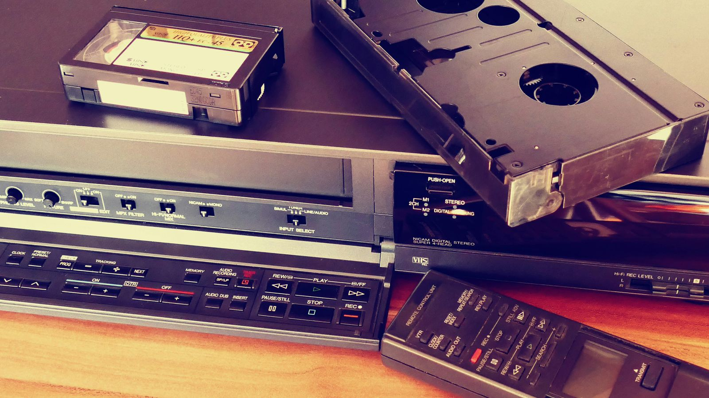

- Definición.
El video analógico es una forma de representación de imágenes en movimiento mediante señales eléctricas continuas, que están codificadas como variaciones de voltaje. A diferencia del video digital, que utiliza datos discretos para representar imágenes, el video analógico depende de ondas continuas y no se puede manipular tan fácilmente sin pérdida de calidad.
- Formatos de Video Analógico.
Los formatos de video analógico más comunes incluyen:
- VHS: Fue uno de los formatos más populares para grabar y reproducir video en el hogar. Su resolución es bastante baja comparada con los estándares modernos.
- Betamax: Fue un competidor directo del VHS, pero con una calidad de imagen superior, aunque con menor capacidad de grabación.
- Video compuesto (Composite): Utiliza una señal analógica para transmitir video y audio a través de un solo cable, aunque con una resolución y calidad limitadas en comparación con las opciones digitales.
- Características del Video Analógico.
El video analógico transmite información de video a través de señales continuas, lo que puede provocar distorsiones o interferencias si la señal se debilita. La calidad del video puede degradarse con el tiempo debido al desgaste de los medios de almacenamiento, como las cintas VHS o Betamax.
- Desventajas del Video Analógico.
A pesar de su capacidad para reproducir imágenes y sonido en tiempo real, los formatos de video analógico tienen varias desventajas:
- Calidad de imagen limitada: La resolución de la imagen en video analógico es mucho más baja que la de los formatos digitales modernos.
- Degradación con el tiempo: Las grabaciones en cinta pueden perder calidad debido al desgaste o daños físicos.
- Interferencias y ruido: Las señales analógicas son susceptibles a interferencias, lo que puede resultar en imágenes distorsionadas.
- Transición a Video Digital.
Con el avance de la tecnología, el video digital comenzó a reemplazar al video analógico, gracias a sus ventajas en términos de calidad, compresión, y facilidad de almacenamiento. El video digital permite una mejor manipulación, edición y distribución, a la vez que mantiene una calidad constante a lo largo del tiempo, sin la degradación que experimenta el video analógico.
- Impacto en la Industria.
A pesar de ser reemplazado en gran parte por el video digital, el video analógico sigue siendo relevante en ciertas áreas, como la conservación de archivos históricos o en situaciones en las que la tecnología digital no está disponible. Sin embargo, la mayoría de la industria de medios de comunicación y entretenimiento ha adoptado sistemas digitales debido a su mayor eficiencia y calidad.
